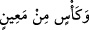
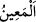
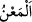
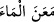
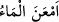
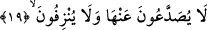

ibriklerle” demektir. “Kûb”, su doldurmak ve diğer işler için, “ibrik” el yıkamada
kullanılmak ve “ke’s” ise cennet şarabı içmek için kullanılan kap isimleridir.
Âyet-i kerîmede geçen
(ve ke’sin min main), “cennet çeşmelerinden akan
cennet şarabı ile dolu kadehler” demektir. Haber verildiğine göre cennet şarabı,
zorlukla ve çilelerle elde edilen ve bir takım kaplarda saklanan dünya şarabı gibi
değildir. Bol olan ve nehir gibi akan bir içecektir. Nitekim bu hususta, “…içenlere
lezzet veren şaraptan ırmaklar ve süzme baldan ırmaklar vardır” (Muhammed
47/15) buyrulmaktadır.
“Ke’s”, içinde şarap bulunan kaba verilen bir isimdir. Boş olduğunda ise ona “kadeh”
denir.
(maîn) kelimesi akan suya denir. Bu açıdan kelime, “feîl” vezninde gelip “fâil”
anlamında kullanılmıştır. Yahut gözlerin, açıkça nehirler içinde akar su hâlinde gördüğü
su demektir. Bu açıdan kelime, “feîl” vezninde gelip “meful” mânâsı ifâde etmiş ve
“karşısındaki birini başkasından ayıracak şekilde gözle görmek” anlamındaki
“muâyene” kökünden alınmış olur.
Kamus’ta belirtildiğine göre
(el-ma’nü) kelimesi “açıkça görünen su”;
(me’ane’l-mâe) ifâdesi “suyu akıttı”;
(em’ane’l-mâu) ise “su aktı” mânâsına
gelmektedir.
Şâyet, testiler anlamındaki “ekvâb” ve ibrikler anlamındaki “ebârîk” kelimeleri çoğul
getirildiği halde, kâse anlamındaki “ke’s” kelimesi niçin müfred olarak getirildi, diye
sorulacak olursa şöyle cevap verilir: Bu içenlerin âdeti gereğidir. Onlar şarabı çeşitli
kablarda hazırlayıp yaparlar, ama tek kase ile içerler.
19. Bu şaraptan ne başları ağrır, ne de akılları gider.
“Sad’” kelimesi cam, demir vs. gibi katı ve sert cisimlerde meydana gelen çatlak,
yarık demektir. “Başağrısı” anlamındaki
(sudâ’), bu sad’ kelimesinden alınarak
istiare olarak kullanılmıştır. Ağrıdan dolayı başta meydana gelen mecâzi yarılma
demektir. Yine bu kökten türeyen
(sadî’) sabah anlamındadır.
Buna göre âyetin mânâsı şöyle olur: Onlar, bu cennet şarabını içmeleri nedeniyle,
dünya şarabında olduğu gibi baş ağrısı çekmezler. Gerçek olan şu ki, bu cennet şarabı
yüzünden onların başları ağrımaz.
İbni Abbas (r.a.)’nın bildirdiğine göre dünya şarabının dört özelliği vardır:
Sarhoşluk, baş ağrısı, kusma ve idrara çıkma. Cennet şarabında ise bu kötülüklerin hiç
biri yoktur. Onda eziyetsiz lezzet ve tat vardır.